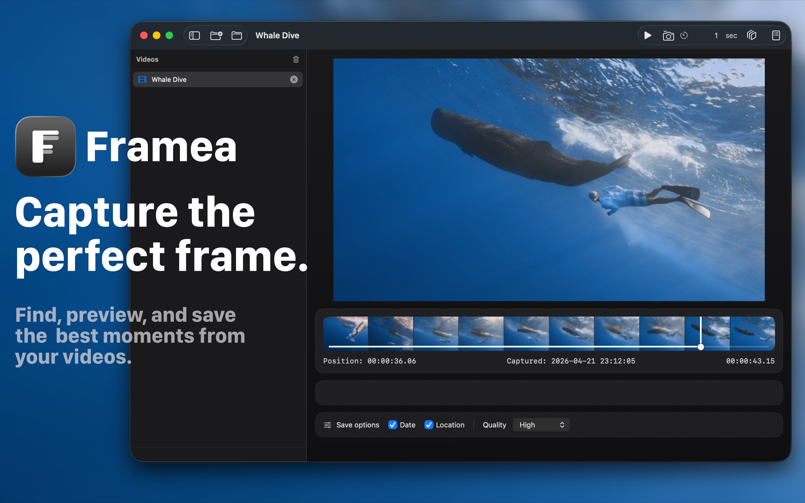

Simple, fast, and focused.
Framea is designed for creators, editors, photographers, and anyone who wants to save beautiful moments from video.
Instant frame capture
Open a video, choose the perfect moment, and save a high-quality still image with a single action.
Metadata options
Choose whether to preserve shooting date and location metadata when saving images.
Batch export
Save frames automatically at custom intervals, such as every second, for faster review and selection.
Multi-video workflow
Add multiple videos, switch between them from the sidebar, and batch export frames from the list.
FAQ
What is Framea?
Framea is a macOS app that helps you capture still images from video files quickly and easily.
Which video formats are supported?
Framea supports major video formats that are supported by macOS AVFoundation, including MP4, MOV, and M4V.
Does Framea support metadata?
Framea includes options for saving shooting date and location metadata when available.
Can Framea batch export frames?
Yes. You can export frames at custom time intervals, such as every 1 second or every 5 seconds.
What are the system requirements?
Framea is designed for macOS and works on Apple Silicon and Intel Macs, depending on the version distributed on the Mac App Store.
How can I contact support?
Please contact: hello.toshiyuki.kanai@gmail.com
Support
For questions, feedback, or support requests, please contact hello.toshiyuki.kanai@gmail.com.